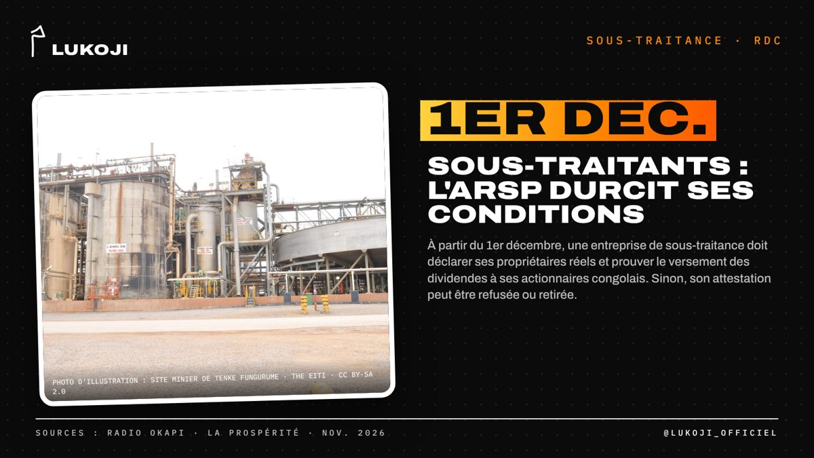

À partir du 1er décembre 2026, une entreprise de sous-traitance qui veut obtenir ou garder son attestation de l'ARSP devra fournir de nouveaux documents. L'Autorité de régulation de la sous-traitance dans le secteur privé veut savoir qui possède vraiment ces entreprises, et si les actionnaires congolais touchent bien leur part des bénéfices.
Ce qui s'est passé
Dans un communiqué daté du 12 novembre 2026, repris par Radio Okapi le 14 novembre et par le quotidien La Prospérité, l'ARSP annonce de nouvelles conditions d'enregistrement. Elles découlent de la loi du 30 juin 2026, qui modifie et complète la loi de 2017 sur la sous-traitance dans le secteur privé.
Selon ces articles, l'entreprise devra présenter :
- une déclaration sous serment de ses bénéficiaires effectifs, c'est-à-dire des personnes qui possèdent ou contrôlent réellement la société ;
- une copie certifiée conforme de son pacte d'actionnaires et de ses accords de gestion, s'ils existent ;
- la preuve que les dividendes ont été versés aux actionnaires congolais ;
- un quitus fiscal en cours de validité.
Rappel : la loi réserve déjà la sous-traitance aux entreprises dont au moins 51 % du capital est détenu par des Congolais. Si un document manque, l'ARSP peut refuser la demande d'enregistrement ou retirer une attestation déjà accordée.
Quelques jours plus tôt, le 10 novembre, l'ARSP avait demandé à trois sociétés minières de mettre fin à leurs contrats avec des sous-traitants qu'elle jugeait non éligibles. Le contrôle est donc déjà en marche.

Pourquoi ça compte pour un entrepreneur
La sous-traitance, c'est le transport, le gardiennage, la restauration du personnel, l'entretien, le BTP, la fourniture de matériel autour des mines et des grandes entreprises. Pour beaucoup de PME congolaises, c'est le premier gros client.
Le message de l'ARSP vise surtout les montages de façade : une société présentée comme congolaise sur le papier, mais dont les bénéfices partent ailleurs. Pour une PME vraiment tenue par des Congolais, ces règles peuvent ouvrir de la place. Elles demandent aussi de la rigueur : un dossier incomplet peut faire perdre un contrat.
Ce que tu peux en tirer
- Mets ton dossier à jour avant le 1er décembre. Statuts, liste des associés, pacte d'actionnaires s'il existe : tout doit dire la même chose.
- Verse les dividendes par la banque. Un paiement en liquide ne laisse pas de trace. Un virement bancaire, oui.
- Surveille ton quitus fiscal. Note sa date d'expiration et renouvelle-le à temps.
- Si tu es associé minoritaire, lis ce que tu signes. Un accord de gestion peut donner le contrôle réel à quelqu'un d'autre. C'est justement ce que l'ARSP veut voir.
Le client d'une PME ne regarde pas seulement son prix. Il regarde aussi si elle a ses papiers. Un dossier propre, c'est un argument commercial.
Sources : Radio Okapi (14 novembre 2026), La Prospérité (novembre 2026), communiqué de l'ARSP du 12 novembre 2026 ; mines.cd et allAfrica (décisions du 10 novembre).
LUKOJI · Innover · Créer · Impacter